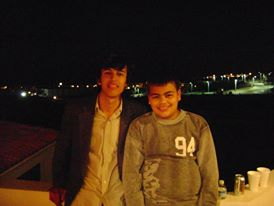
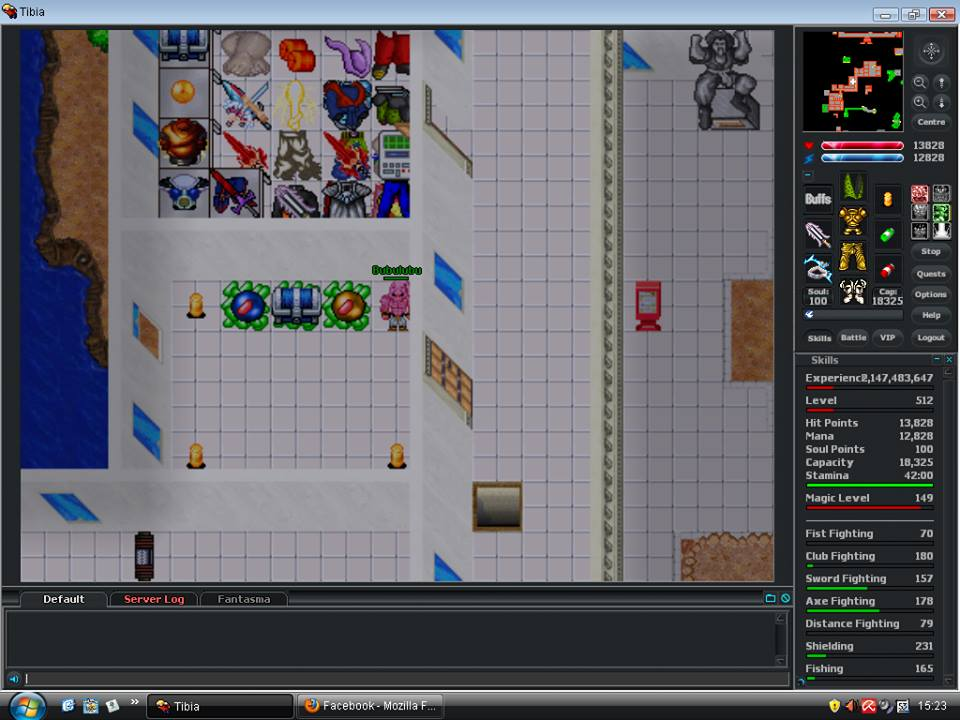
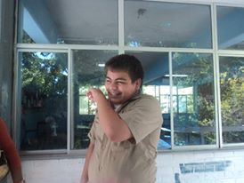
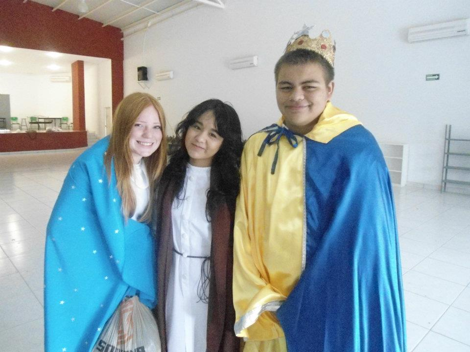

ADOLESCENCIA

Comenzare a relatar mi adolescencia apesar de que no gusta hablar de ella, considero que fue una de mis etapas mas tristes vivía con mi mama en la ciudad de los mochis y en la época decembrina tenia la oportunidad de dividirme o pasarla con mi papa o con mi mama ya que cuando estaba en 6to mis padres decidieron separarse fue por mi forma de pensar algo triste, me toco vivir la experiencia de un divorcio peleas, gritos, ir con el psicólogo familiar para saber con quien me quedaría en custodia. Pero comenzare a contar los primeros 2 años de mi secundaria comencé a vivir con mi madre pienso yo la peor decisión que pude haber tomado. Mi madre estaba en una pagina de citas donde conocio a su actualmente esposo por lo tanto yo estaba por mi lado solo contra el mundo, ella no se hizo cargo de mi ni le preocupaba si asistia a la secundaria o no. Comencé a faltar cuando quería, me empecé a involucrar en los juegos online donde comencé a jugar un MMORPG polako.

Comenze a jugar en dicho juego donde conocí a la persona que hoy considero mi mejor amigo, lo conocí de una forma algo rara yo solía subir en cierto tipo de respawn donde no iban muchos jugadores, entonces el estaba subiendo ahí pero no me dejaba subir nivel de la forma que me gustaría, entonces lo intente matar mas al no poderlo matar nos unimos para matar a otro player que andaba en el mismo respawn. Bueno continuando con dicho juego me convertí en el jugador numero 5 con un nivel 524 del servidor antes de retirarme ya que dejo de interesarme.

Bueno continuando con mi vida cuando comencé mi vida en la secundaria no fue una etapa muy agradable como lo mencionaba anteriormente, no asistía y cuando asistía solo entraba a clases que me gustaban o con profesores que me interesaran, mis clases favoritas eran historia, español, ciencias naturales, no solía asistir por que sufría de bullyng y por el hecho de que no me molestaran fingía estar enfermo o simplemente no entraba a clases, una de las cosas mas graciosas que me paso es que una de las personas que me hacían bullyng me golpeaba y me molestaba es actualmente mi novia, mi padre al pedirme mis califiaciones pues no eran lo que el esperaba, no reprobava pero mis calificaciones eran bajas. Asi que cuando estaba en 3ero de secundaria mi fui a vivir con mi papa donde el hizo que me interesara mas por mi futuro. Así conseguí graduarme con un promedio muy bajo de 7.9 e hice mi examen para ingresar a la preparatoria CbTIS No 43 donde el me ayudo a estudiar para mi examen de ingreso obteniendo uno de los mejores promedios del examen. Quedando en el aula "A"

Bueno de mi preparatoria no tengo mucho que contar yo la considero mi mejores años, conocí personas que se convirtieron en grandes amigos mios, tuve mi primer novia no fue la mejor pero fue la primera, tuve la oportunidad de estar en la especialidad de informática. Me gradué con un promedio de 9.2, pero lo mas importante es que comencé a cambiar mi actitud, empezar a ser un poco mas abierto hacia las personas. Saber que no todo es lo que crees que hay personas que te defraudaran y otras que te ayudaran cuando nadie mas te quiera ayudar.